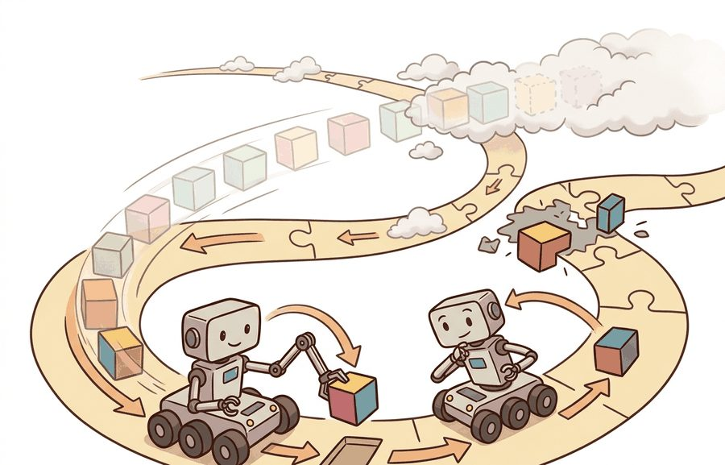
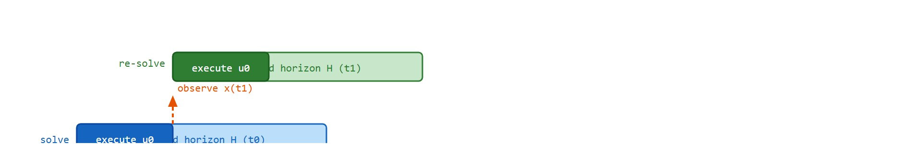
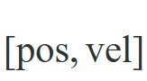
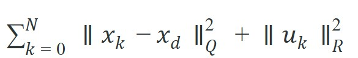
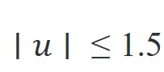

Section 7.5: Model predictive control (MPC) as receding-horizon optimization
"MPC commits to the first step of a plan it will never finish, because the plan is not the point; the planning is."
A Receding-Horizon Optimist

Figure 7.5A: MPC as a receding-horizon optimizer: at each timestep the agent solves a short-horizon trajectory optimization, executes the first action, then re-solves with the updated state, repeating indefinitely.
This section assumes familiarity with PID feedback control from section 7.3 and the LQR cost-function framework from section 7.4, which together establish why a controller needs both an error signal and a notion of optimality before receding-horizon planning adds value. The constraint-handling ideas developed here carry forward directly into section 7.6 on whole-body control, where MPC enforces joint torque and contact-force limits simultaneously. The receding-horizon execution pattern recurs in Part V alongside learned policies: section 22.1 shows how action chunking in diffusion policies is the same replanning loop applied to imitation learning.
Big Picture
A legged robot steps onto ice: the terrain model is wrong, the joints are near their torque limits, and a stumble is 80 ms away. A PID controller reacts to error it has already accumulated. A well-tuned LQR ignores the joint limits entirely. Model predictive control does something different: it solves a short-horizon trajectory optimization at every timestep, respects constraints explicitly, and throws away all but the first action before solving again. That receding horizon is why MPC now powers autonomous vehicles, manipulation arms, and whole-body humanoid locomotion. By the end of this section you will implement the core loop, tune the horizon length, and see exactly where the real-time solve budget bites.
Picture a controller that draws up a careful fifteen-step plan, then deletes fourteen of the fifteen steps and starts over: that deliberate amnesia, repeated dozens of times a second, is exactly what lets MPC drive a car within its lane, land a rocket, and keep a humanoid upright on ice. Figure 7.5A captures the whole loop at a glance: solve a short-horizon optimization, execute only the first action, re-solve from the new state, and repeat. This section defines the object, connects it to the agent loop, and tests it with a compact implementation.
The key question in Model predictive control (MPC) as receding-horizon optimization is practical: what must the agent know, what can it observe, what action is available, and what evidence shows that the action worked under the stated conditions?
Action Is The Test
A representation earns its place when it changes the measurable action interface. In Model predictive control (MPC) as receding-horizon optimization, the reader should keep asking which decision becomes easier, safer, or more reliable.
Theory
For Model predictive control (MPC) as receding-horizon optimization, the practical design rule is to make the interface inspectable before optimization begins: inputs, outputs, units, latency, bounds, and failure labels should all be visible in the saved artifact.
That inspectable interface is not a teaching abstraction; it is exactly what production controllers expose, because the same fields decide whether a real robot meets its deadline. MPC runs in production across many timescales and constraint types. Boston Dynamics runs receding-horizon whole-body MPC on Spot and Atlas at roughly 500 Hz. The optimizer enforces joint torque limits and foot-contact force constraints on every tick. Tesla's Autopilot path tracker uses a kinematic MPC with a 2-second horizon to stay within lane boundaries. SpaceX's Falcon 9 landing controller solves a convex fuel-optimal MPC problem in real time during final descent. Every deployment shares the same structure: the optimizer enforces constraints, and the receding horizon corrects model error.
MPC solves a short planning problem at every control tick, executes only the first command, then replans after the next observation. A model with 5% parameter error can accumulate a trajectory deviation of 30-50% over a 2-second open-loop plan. The exact figure depends on system nonlinearity and error structure. The same model under a 200 ms receding horizon typically keeps deviation well below 10%, because each tick corrects before errors compound. This is the error-before-it-compounds principle. It explains why replanning frequency often matters more than model fidelity. A model that is only 95% accurate still controls a robot safely if you correct at 50 Hz. Run that same 95%-accurate model open-loop for 2 seconds and it produces errors larger than the robot can recover from. The receding horizon also handles constraints directly: actuator limits, collision margins, contact forces, battery limits, joint limits, and comfort bounds all enter the optimization explicitly. The cost encourages progress; the constraints bound what the robot may spend to achieve it. Figure 7.5B traces one turn of this loop: the optimizer plans a full horizon, executes a single action, observes the resulting state, and re-solves with the window shifted forward.

Figure 7.5B: MPC receding-horizon loop. At tick t0 the optimizer plans a full horizon (blue bar) but sends only the first action (dark blue "execute u0") to the hardware; after observing the new state x(t1) it re-solves at t1 (green bar), again executing only the first action, so the horizon window recedes one step forward each tick.
A common assumption is that MPC computes a full trajectory and then executes it from start to finish, treating the planner as a one-shot path generator. This is wrong in any embodied context: the robot executes only the very first action from the optimized sequence and then discards the rest. The remaining planned actions are never sent to the hardware; they exist solely to give the optimizer enough look-ahead to respect constraints and anticipate future states. The correct mental model is a cursor that advances one tick at a time, re-solving the entire optimization from the newly observed state on every tick, so that model error and disturbances are corrected before they accumulate rather than after.
When To Choose MPC Over PID or LQR
Use MPC when at least one of the following is true: (1) hard constraints on inputs or states must never be violated (joint limits, collision margins, battery thresholds); (2) the system is naturally nonlinear or operates far from a single operating point, making a fixed linear gain unreliable; or (3) preview information is available (a reference trajectory, a map of upcoming terrain) that a memoryless controller cannot exploit. PID and LQR are faster per tick and simpler to tune; prefer them when none of those three conditions apply. For horizon length, a rule of thumb is to choose $H$ so that the open-loop prediction covers at least one dominant time constant of the plant. Longer horizons improve constraint handling but increase solve time quadratically for quadratic program (QP)-based formulations.
MPC Deadline Rule
An MPC controller that finds an excellent plan after the deadline has still failed the control loop. Log solve time, solver status, warm-start quality, infeasibility reason, and the fallback command. The fallback is part of the controller, not an afterthought.
Mechanism
At each control tick, MPC linearizes the robot's nonlinear dynamics around the current state (linearization replaces the true nonlinear equations of motion with a local straight-line, first-order approximation that is only accurate near the current operating point, which is why it must be recomputed at every tick), solves a constrained QP over the next $H$ steps, and sends only $u_0$ to the actuators. On a Franka Panda at 1 kHz, this pipeline must complete in under 1 ms; on a legged robot like Spot running whole-body MPC at 500 Hz, the budget is 2 ms per tick. What makes this physically consequential: a solve that overshoots its deadline by even one tick either forces a stale command (accumulated Cartesian error of roughly 1 cm per missed tick at 0.5 m/s end-effector speed) or triggers the safety fallback, which on most manipulators is a velocity-damped hold that can leave the arm in a collision-prone intermediate pose. The "contract between representation and action" therefore has a hard timing clause: log solve time, solver status, warm-start quality, infeasibility reason, and the fallback command issued on every deadline miss, because the fallback is as much a part of the controller as the nominal solve.
Worked Example
The code below optimizes over the control sequence alone and recovers the states by rolling the dynamics forward from them, a pattern named "single-shooting" when it is introduced formally in the Practical Recipe; keep the label in mind now so the later definition reads as a name for something already familiar rather than a new idea.
MPC solves a finite-horizon optimization at every tick, executes only the first command, then replans. Code Fragment 7.5.1 implements this on a 1D double integrator (state

, control = acceleration). Each tick minimizes

subject to the discrete dynamics and a hard acceleration limit

. The previous solution is shifted forward as a warm start, where a warm start is an initial guess handed to the solver so it begins near the answer instead of from scratch, which is what keeps the per-tick solve fast enough to meet a control deadline.
importnumpyasnpfromscipy.optimizeimportminimize# 1D double integrator: state [pos, vel], control = acceleration. Drive to x_d.dt,N=0.1,15# horizon lengthA=np.array([[1,dt],[0,1.0]])B=np.array([0.5*dt*dt,dt])x_d=np.array([1.0,0.0])Qx,Qv,Ru=10.0,1.0,0.1u_lim=1.5# acceleration constraintdefrollout(u_seq,x0):x,xs=x0.copy(),[x0.copy()]foruinu_seq:x=A@x+B*u;xs.append(x)returnnp.array(xs)defcost(u_seq,x0):e=rollout(u_seq,x0)-x_dreturnQx*np.sum(e[:,0]**2)+Qv*np.sum(e[:,1]**2)+Ru*np.sum(u_seq**2)defmpc_step(x0,warm):res=minimize(cost,warm,args=(x0,),method="SLSQP",bounds=[(-u_lim,u_lim)]*N,options={"maxiter":50,"ftol":1e-6})returnres.x,res.successx,warm,solves_ok=np.array([0.0,0.0]),np.zeros(N),0fortinrange(40):# closed-loop receding horizonu_seq,ok=mpc_step(x,warm)solves_ok+=int(ok)u0=float(np.clip(u_seq[0],-u_lim,u_lim))# execute only the first commandx=A@x+B*u0warm=np.r_[u_seq[1:],0.0]# shift solution for the warm startprint(f"feasible solves: {solves_ok}/40")print(f"final state pos={x[0]:.3f} vel={x[1]:+.3f} (target pos=1.000 vel=0.000)")
feasible solves: 40/40
final state pos=1.000 vel=-0.000 (target pos=1.000 vel=0.000)
Code Fragment 7.5.1: a closed-loop double-integrator MPC where mpc_step re-solves the bounded SLSQP problem each tick, executes only u_seq[0], and shifts the warm start; receding-horizon control reaches the target while never exceeding the acceleration limit, because the bound lives inside the optimizer rather than being clipped afterward. The cost of this guarantee is compute: solve time grows with the horizon and the number of constraints, so a longer horizon or a tighter model can push a single solve past the control deadline. If any solve returns infeasible, the loop must fall back to a safe command rather than execute a stale plan.
This is where the "optimization" in the section title actually lives: Qx = 10.0, Qv = 1.0, and Ru = 0.1 are not arbitrary, they set the relative price the optimizer pays for position error, velocity error, and control effort. Raising Qx relative to Ru makes the optimizer spend more acceleration to close the position gap faster, at the cost of a sharper, more actuator-hungry trajectory; raising Ru instead produces a gentler approach that may miss the target within the horizon. The practical tuning loop is: start with the actuator limit fixed, set Qx an order of magnitude above Qv so position error dominates velocity error, then increase Ru only if the resulting trajectory saturates the actuator more often than the application can tolerate, rerunning the closed loop after each change rather than reasoning about the weights in isolation.
Step-Through: the first three receding-horizon ticks
Trace the double integrator from Code Fragment 7.5.1 by hand with $dt = 0.1$, dynamics $\text{pos}_{k+1} = \text{pos}_k + 0.1\,\text{vel}_k + 0.005\,u_k$ and $\text{vel}_{k+1} = \text{vel}_k + 0.1\,u_k$, target $x_d = [1.0,\ 0.0]$, acceleration limit $|u| \le 1.5$, starting from rest at $x = [0.0,\ 0.0]$.
Tick 0. State $[0.000,\ 0.000]$, far from the target with zero velocity. The optimizer wants maximum acceleration but the constraint caps it, so $u_0 = +1.5$. Execute one step: $\text{pos} = 0 + 0.1\cdot 0 + 0.005\cdot 1.5 = 0.0075$, $\text{vel} = 0 + 0.1\cdot 1.5 = 0.150$. New state $[0.0075,\ 0.150]$. Discard the other 14 planned actions.
Tick 1. Re-solve from $[0.0075,\ 0.150]$. Still far, still accelerating, so again $u_0 = +1.5$. Step: $\text{pos} = 0.0075 + 0.1\cdot 0.150 + 0.005\cdot 1.5 = 0.0300$, $\text{vel} = 0.150 + 0.15 = 0.300$. New state $[0.0300,\ 0.300]$.
Tick 2. Re-solve from $[0.0300,\ 0.300]$. The optimizer now sees within its horizon that arriving at $\text{pos}=1.0$ with $\text{vel}=0$ requires braking soon, but at distance $0.97$ it is still too early, so $u_0 = +1.5$ once more. Step to $[0.0600,\ 0.450]$. The pattern that matters: the bound is respected at every tick because it lives in the QP, and only as the cart nears $\text{pos}=1.0$ does the sign of $u_0$ flip to brake. Run the full loop and the closed loop settles to $\text{pos}=1.000$, $\text{vel}=0.000$ in 40 ticks, exactly the printed output.
When switching from SciPy's minimize to OSQP or CasADi for a linear or quadratic MPC, initialize the warm start with the shifted previous solution (drop the first element, append a zero) exactly as shown above. OSQP's warm_start(x=..., y=...) additionally requires the dual variable vector from the last solve; omitting it causes OSQP to cold-start every tick, which can triple solve time on a 15-step horizon and blow a 2 ms control deadline even when the primal solution is trivial. Retrieve the dual vector via solver.workspace.y after each call and pass it back on the next tick.
Library Shortcut
The fragment should expose horizon, dynamics, cost, constraints, solver status, and first action. CasADi, do-mpc, OSQP, and Drake are useful when the small optimization already explains its command.
Practical Recipe
The toy double integrator hid the one decision that dominates every real deployment: the order in which you fix the control rate, the horizon, and the constraints, because each choice silently bounds the next.
Fix the control rate first and derive the solve budget from it: a Franka Panda torque loop at 1 kHz gives you 1 ms per tick; Spot's whole-body MPC at 500 Hz gives 2 ms; a Tesla-style lane tracker at 50 Hz gives 20 ms. Every later choice (horizon length, model fidelity, solver) is bounded by this number.
Build the baseline as a single-shooting QP, where single-shooting means the only decision variables are the control inputs and the states are recovered by rolling the dynamics forward from them, on the linearized dynamics around the current operating point, then check it open-loop against a MuJoCo or Drake rollout of the true nonlinear plant before closing the loop.
Choose the horizon $H$ so the prediction spans at least one dominant plant time constant (roughly 1.5-2 s for a quadruped gait cycle, 200-400 ms for a manipulator reach), then shorten it until the worst-case solve fits the budget from step 1.
Encode actuator and safety limits as hard constraints inside the QP (joint torque on the Panda, foot-contact friction cones on Spot (the friction cone is the set of contact forces a foot can exert without slipping, bounded by the friction coefficient), lane boundaries on the vehicle), never as post-hoc clipping, and define the fallback command issued on infeasibility or deadline miss.
Stress the closed loop with the disturbance the controller will actually face: a 5% mass error on the quadruped, a friction-cone violation on ice, or a 1-tick sensor delay, and confirm the receding horizon corrects it within a few ticks rather than diverging.
Common Failure Mode
The common mistake in Model predictive control (MPC) as receding-horizon optimization is to celebrate the component score before checking the closed-loop handoff. The failure usually appears at the boundary: stale state, wrong frame, delayed action, saturated actuator, or metric that ignores the real task cost.
A robotics team using Model predictive control (MPC) as receding-horizon optimization should log not only final success, but intermediate observations, chosen actions, controller status, and recovery events. The logs reveal whether the method is solving the task or merely passing the easiest episodes.
Real-World Application: rocket landing
SpaceX's Falcon 9 booster lands itself by solving a convex fuel-optimal MPC problem in real time during the final descent burn, re-solving every control tick as the vehicle sheds mass and the aerodynamic state changes. The optimizer enforces hard constraints (thrust limits, the engine's minimum-throttle floor, and a glide-slope keep-out cone) that a fixed-gain controller could never guarantee, while the receding horizon absorbs wind gusts and atmospheric model error that would otherwise compound over an open-loop trajectory. This is the same constrained, replan-every-tick structure as the double integrator above, scaled to a booster that weighs on the order of tens of thousands of kilograms at landing (roughly two orders of magnitude heavier than the double integrator's toy units, not literally comparable, but the same receding-horizon structure).
Memory Hook
For model predictive control (mpc) as receding-horizon optimization, the useful test is simple: could a teammate point to the log line, plot, or trace that proves the idea changed the agent's next action?
Research Frontier
Learning-augmented MPC (2024-2026). Rather than replacing the optimizer, recent work uses neural networks to supply fast warm starts, adapt the cost function online, or predict constraint tightening from perception. ETH Zurich's Model Predictive Path Integral (MPPI)-based locomotion work (Hoeller et al., "ANYmal Parkour," Science Robotics 2024) showed that a learned residual policy wrapped around a receding-horizon planner outperforms either component alone on agile legged terrain, because the network handles model mismatch while the optimizer enforces contact constraints the network ignores.
Diffusion-based trajectory optimization (2024-2026). Score-based generative models are being reframed as implicit MPC solvers: the denoising process corresponds to iterative descent on an energy landscape shaped by dynamics and constraints. Work from MIT (Chi et al., "Diffusion Policy," RSS 2023, extended to real hardware in 2024-2025) and follow-up from Stanford's IRIS lab treats receding-horizon replanning as repeated conditional sampling, giving the optimizer a multimodal solution space that convex QP formulations cannot represent. Open challenge: guaranteeing constraint satisfaction within a diffusion rollout without rejecting the majority of samples.
Real-time nonlinear MPC via GPU-parallelized shooting (2024-2026). Sampling-based MPC (MPPI and variants) now runs at 1 kHz on a single GPU by evaluating thousands of rollouts in parallel rather than solving a single QP. NVIDIA's Isaac Lab and associated papers (2024) demonstrated whole-body humanoid balance using GPU-parallel MPPI at control rates previously achievable only with convex relaxations, which in these demonstrated gaits reduces reliance on linearizing the dynamics and can lessen, though it does not categorically remove, model-plant mismatch in legged systems.
Checkpoint
So far: three research directions try to keep MPC's guarantees while removing its bottlenecks, learned residual policies patch model mismatch around a standard optimizer, diffusion models reframe the optimizer itself as an iterative sampling process, and GPU-parallel sampling-based MPC (MPPI) replaces the QP solve with thousands of parallel rollouts; the open problem below asks when any of these substitutes can still be trusted.
Open problem for a PhD student. All three directions above assume the robot can evaluate its dynamics model fast enough to exploit GPU parallelism or warm-start a diffusion sampler. For deformable-object manipulation (cloth, dough, cables), no compact dynamics model fits in a 2 ms solve budget, and learned surrogates accumulate errors over a 15-step horizon that the receding-horizon correction cannot outrun. Formalizing the conditions under which a learned dynamics surrogate is "safe enough" for receding-horizon execution, with a computable certificate tied to the surrogate's prediction uncertainty, is an open problem where control theory and modern machine learning have not yet met.
Self Check
Can you name the observation, state estimate, action, success metric, and most likely failure mode for Model predictive control (MPC) as receding-horizon optimization? If not, the system boundary is still too vague.
Production Pattern
Model predictive control (MPC) as receding-horizon optimization sits inside the Part II robotics contract: geometry defines where things are, kinematics defines what motion is possible, dynamics defines what motion costs, control defines how errors are corrected, and sensing defines what the agent can know on time.
For MPC, log horizon, constraints, solver status, warm start, and missed-deadline behavior. The idea has an intuitive role, a formal interface, a runnable check, and a failure mode that can be reproduced.
A controller that plans perfectly over ten seconds but never corrects is not a controller; it is a schedule, and schedules break the moment reality disagrees.
Mechanism To Watch
For Model predictive control (MPC) as receding-horizon optimization, control closes the loop between estimated state and action. Keep reference, measured state, error signal, control law, actuator limits, and safety fallback separate in the evidence record.
Library Choices And Verification Checks
Tool or Library
What It Handles
Verification Check
python-control
analyzes linear systems, transfer functions, state-space models, and feedback loops
Verify units, sample time, poles, stability margin, and reference scaling.
CasADi
formulates optimization-based controllers with constraints and horizons
Verify constraints, warm start, solver status, and deadline behavior.
Drake
models dynamical systems, multibody plants, optimization, and controllers
Verify scalar type, plant finalization, frame convention, and solver status.
do-mpc
formulates optimization-based controllers with constraints and horizons
Verify constraints, warm start, solver status, and deadline behavior.
ROS 2 control
supports practical work on Model predictive control (MPC) as receding-horizon optimization
Verify the library output against the hand-built baseline on one small case.
Use this recipe when turning Model predictive control (MPC) as receding-horizon optimization into code, a simulator experiment, or a robot diagnostic. The point is not to use every library. The point is to keep the hand-built baseline and the maintained-tool path comparable.
Write the control objective, measured state, actuator command, update rate, and saturation policy.
Run a step-response test before adding learning, with overshoot, settling time, and steady-state error logged.
Compare the hand controller with python-control, CasADi, Drake, do-mpc, or ROS 2 control on the same plant model.
Record latency, missed deadlines, saturation events, constraint violations, and recovery actions.
Only compare controllers and policies when they share sensors, action limits, disturbance tests, and safety checks.
Evidence Gate
For Model predictive control (MPC) as receding-horizon optimization, compare methods only through one saved artifact that preserves the inputs, outputs, units, timestamps, latency budget, configuration, seed, metric definition, and failure labels relevant to this section. The comparison is meaningful only when the same script evaluates the same panel.
Exercise Extension
Extend the section exercise by adding one perturbation specific to Model predictive control (MPC) as receding-horizon optimization and one latency or uncertainty check. Save the result in the EvidenceRecord schema, then explain which library output you trust and why.
A learned policy can mask an MPC timing failure until the disturbance changes. Before scaling training, audit horizon length, model mismatch, constraint scaling, solver status, missed deadlines, warm start, and fallback behavior. Reproduce one small receding-horizon case by hand, then rerun it through CasADi, do-mpc, or Drake. When the two disagree, inspect dynamics discretization, constraint units, terminal cost, and the command actually executed after replanning.
Technical Core
What actually breaks when you make the horizon too short? Not the math: the optimizer still converges. What breaks is that the robot runs out of look-ahead precisely when a constraint is approaching, so the first tick that "sees" the limit is also the tick that violates it. Everything that follows is about choosing variables, cost terms, and horizon lengths to prevent that failure before it reaches the hardware.
Model predictive control (MPC) as receding-horizon optimization needs a topic-native core: variables, equations or system contracts, an algorithmic procedure, an expected output, and a failure diagnosis. Figure 7.5.T summarizes the chain this section must preserve when moving from a teaching example to a real embodied system.
Figure 7.5.T: An MPC controller is only trustworthy when every link in this chain is made explicit: skip the assumptions and the constraints have wrong units; skip the evidence artifact and a passing solver status hides a missed deadline. The chain reads left to right because a failure at any earlier block silently corrupts every block after it.
Formal Object
MPC solves $\min_{u_{0:H-1}}\sum_{k=0}^{H-1}\ell(x_k,u_k)+\ell_f(x_H)$ subject to $x_{k+1}=f(x_k,u_k)$, $x_k\in\mathcal X$, and $u_k\in\mathcal U$. After solving, the robot executes only $u_0$, observes the new state, shifts the horizon, and solves again.
Why the terminal cost matters on a real robot: a finite horizon ends at step $H$, so the optimizer can "cheat" by driving to a state that looks cheap at $H$ but is actually trapped (near a joint limit, mid-fall, or with zero velocity margin). Without $\ell_f$, a manipulator arm can terminate a plan at a configuration it cannot escape within the next horizon, causing the next solve to be infeasible. The terminal cost penalizes distance from a known-safe invariant set (a region of states from which the controller can keep the robot safe indefinitely, so ending a horizon inside it guarantees the next horizon has a feasible continuation), giving the solver a reason to end each horizon in a state from which future horizons can also succeed.
How it works mechanically: $\ell_f$ is typically a positive-definite quadratic $x_H^\top P x_H$ where $P$ is the LQR cost-to-go matrix for the linearized system at the target, the cost-to-go being the total remaining cost incurred from a given state under the optimal policy. Because the LQR cost-to-go is the exact value function (the function mapping any state to the minimum total future cost achievable from it under the optimal policy) for an infinite-horizon unconstrained problem, adding it as a terminal penalty approximates the true cost of the tail beyond the horizon without solving infinitely many steps. The optimizer then balances stage costs over $[0, H-1]$ against the surrogate future cost at step $H$, producing plans that do not sacrifice long-run safety for short-run gain. This equivalence is exact only for the linearized model near the target; on the real nonlinear plant the LQR cost-to-go is an approximation whose accuracy degrades the further the terminal state sits from the linearization point, which is why the terminal set is typically kept small enough that the local linear model stays valid inside it.
Think of the terminal cost like a long-distance runner choosing where to be at the 800-metre mark of a 1500-metre race. The runner cannot see the finish line yet, but she knows from experience that being boxed in on the inside with no room to accelerate is a bad position regardless of her current pace. The terminal cost is that same position-quality score: even though the optimizer only plans a few steps ahead, it penalizes ending those steps in a state that will be hard to escape, exactly the way a smart racer steers toward open space rather than the rail, so that future strides remain possible.
Controller evaluation loop
Define the reference, measured state, error signal, actuator command, update rate, and saturation policy.
Run a step or disturbance response before adding learning.
Log overshoot, settling time, steady-state error, latency, saturation, and recovery behavior.
Compare PID, LQR, or MPC only under the same plant, sensors, limits, disturbance panel, and metric code.
Technical Contract For Model predictive control (MPC) as receding-horizon optimization
Contract Field
What To Specify
Why It Matters
State and observation
Variables, units, timestamps, frames, and uncertainty.
Prevents a model score from being mistaken for robot capability.
Action interface
Command type, limits, update rate, and safety fallback.
Makes the learned or planned output executable.
Evidence artifact
Trace, metric, configuration, seed, and failure label.
Allows baseline and library path to be compared in one pass.
Shows the practical library route after the mechanism is understood.
For Model predictive control (MPC) as receding-horizon optimization, expected output is a trace where the relevant error decreases, overshoot stays within the design bound, and actuator commands remain within limits under the stated timing budget.
Failure Mode To Test
Model predictive control (MPC) as receding-horizon optimization should be stress-tested under delay, integral windup, actuator saturation, unmodeled friction, and reference-frame mismatch before the nominal trace is trusted.
Section References
Core references for Model predictive control (MPC) as receding-horizon optimization: Modern Robotics; Murray, Li, and Sastry; Siciliano et al.; LaValle; and official documentation for Drake, MuJoCo, Pinocchio, CasADi, python-control, GTSAM, ROS 2, and OpenCV as applicable.
Use these references to check notation, frame conventions, units, solver assumptions, and maintained-library behavior.
Key Takeaway
Model predictive control (MPC) as receding-horizon optimization is useful when it makes the perception-action loop more reliable, not when it merely adds a more impressive model name.
Exercise 7.5.1
Design a method-matched experiment for Model predictive control (MPC) as receding-horizon optimization. Specify the environment, observations, actions, metric, one perturbation, and the library output you would compare against the hand-built baseline.
Lab: how horizon length trades off against solve time and stability
Goal. Measure empirically how the prediction horizon $N$ changes both closed-loop performance and per-tick solve cost, and find the point where shortening the horizon makes the controller unstable or constraint-violating.
Tools needed. Python with NumPy and SciPy (Code Fragment 7.5.1 as a starting point); optionally time.perf_counter for timing and matplotlib for plots. No robot or simulator required; runs on a laptop in under 30 minutes.
What to vary. Sweep the horizon $N \in \{2, 3, 5, 10, 15, 30\}$. For each value, run the full closed-loop receding-horizon loop to the target and record three things per tick: the wall-clock solve time, whether res.success was true, and the executed acceleration $u_0$. Then repeat the whole sweep with a tighter limit $u\_lim = 0.5$ so the constraint binds harder.
What to observe. Plot mean solve time against $N$ (expect roughly quadratic growth for this dense formulation) and settling time against $N$. You should see a sweet spot: very short horizons overshoot or never settle because the optimizer cannot see far enough to start braking in time, while very long horizons settle well but cost far more compute than the result justifies. With the tighter limit, watch the short-horizon runs start violating or barely satisfying the target velocity at arrival. The takeaway you are confirming: horizon length is the dial that buys constraint foresight at a quadratic compute price, and the right value is the shortest one that still settles cleanly within your solve budget.
Project Ideas
Beginner (weekend): Cart-pole MPC in Gymnasium. Build a receding-horizon MPC controller for the CartPole-v1 environment using SciPy's minimize with a 10-step horizon and a hard pole-angle constraint; the key challenge is tuning the terminal cost so the optimizer does not drive the cart to a wall edge just before the horizon ends. Intermediate (1-2 weeks): Planar arm trajectory tracking in MuJoCo. Implement a linearized MPC on a 2-DOF planar arm in MuJoCo, using CasADi to formulate the QP and warm-starting each tick with the shifted previous solution; the key challenge is keeping the per-tick solve under the 5 ms control deadline while enforcing joint-torque limits that change with arm configuration. Intermediate (1-2 weeks): Mobile robot obstacle avoidance with ROS2. Deploy a kinematic MPC on a differential-drive robot in a Gymnasium or PyBullet environment, publish commands over a ROS2 topic, and add convex obstacle constraints as linear inequalities in the QP; the key challenge is re-linearizing the nonholonomic unicycle model at each tick without accumulating frame drift between the planner and the ROS2 odometry frame.